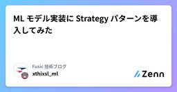

Fusic 技術ブログのフィード
https://zenn.dev/p/fusic
さまざまな個性を受け入れて有機的につなぐ社内環境を整える。あらゆる事業機会の創出と実現を繰り返し、世の中に対する視点を絶えず増やして成長していく。あっと驚くような角度から発展できるポイントを見つけ、そこにいい感じにフィットする形でテクノロジーを組み込んで、世の中をちょっとずつ、時
フィード

ML モデル実装に Strategy パターンを導入してみた
Fusic 技術ブログのフィード
はじめにFusicのレオナです。大学では機械学習・深層学習のモデル開発に取り組んでおり、入社後は新卒研修でソフトウェア開発を学んだあと、機械学習モデル開発案件に携わりました。その中で強く感じたのが、精度改善そのものだけでなく、比較しやすい実装にしておくことの大切さです。機械学習の開発では、PoCや初期検証の段階で複数のモデルを並行して試すことがよくあります。たとえば、RandomForest、LightGBM、ニューラルネットワークのように異なるモデルを切り替えながら、精度や学習コスト、実装のしやすさを見比べていきます。最初のうちは if/elif で切り替える実装でも十分...
5日前

植物のお水をやるタイミングを教えてくれる「水やり番長」を作った😎
Fusic 技術ブログのフィード
弊社のオフィスには観葉植物がいっぱいあります。数年に一度しか咲かなかったはずなのに2年連続同じ日にお花を咲かせるサービス精神旺盛なドラセナ・マッサンゲアナ氏植物、お水をあげないと元気がなくなるし、お水をあげすぎると根腐れしてしまいます。みんなで手分けしてお水をあげていましたが、お水をあげ忘れたり、逆にあげすぎたりするリスクがありました。そこで、土壌の水分を計測して、土が乾いてきたらSlackに通知する「水やり番長😎」を作りました。!開発合宿Vol.23で作りました！感謝のテックブログ🙏 構成水やり番長の構成図。こだわりポイントはLambdaを使わなかったことRas...
16日前
Snowflakeではじめる機械学習ハンズオン
Fusic 技術ブログのフィード
はじめにFusicのレオナです。本ブログではSnowflakeを使って、機械学習モデル構築をハンズオン形式で試してみました。Kaggle の House Prices - Advanced Regression Techniques データセットを使い、CSVデータの取り込みから特徴量エンジニアリング、モデル学習、Model Registry への登録、テストデータ推論までの一連の流れを実装しています。使用する技術:役割技術データ基盤Snowflakeデータ前処理・特徴量エンジニアリングSQLモデル学習・評価scikit-learn（ローカ...
21日前
Amazon BedrockでStructured Outputs試してみた
Fusic 技術ブログのフィード
はじめにFusicのレオナです。今回は2026年2月にAmazon BedrockにStructured Outputsが追加されたので試してみます。 Structured Outputsとは基盤モデルからの応答を、ユーザー定義のJSONスキーマに厳密に準拠させることが可能になりました。従来のプロンプトベースのアプローチでは、モデルにユーザーの望むJSON形式で出力させることが不確実であり、バリデーション処理などの工夫が必要でした。Structured Outputsはこの問題を解決してくれます。https://aws.amazon.com/jp/about-aws/wh...
1ヶ月前
IoT向け一体型基板『MicroCat.1』を使ってSORACOMと通信するまで
Fusic 技術ブログのフィード
MicroCat.1は メカトラックス株式会社 が販売しているMicroPython搭載LTE Cat.1 bis通信モジュール一体基板です。2025年11月に開催された展示会「EdgeTech+2025」にて発表され、その後2025年12月12日からプレリリース版の販売が始まっています。https://store.mechatrax.com/product.php?id=84!台数限定販売となっていますが、執筆時点では「在庫: 27」となっています。LTE通信モジュールを搭載した基板が5000円で購入できる機会はなかなかないので、IoTに興味のある方はこれを機に購入してみてはい...
1ヶ月前
モデリングとは、対象を開発者にとって都合よく切り取ることだと思った
Fusic 技術ブログのフィード
こんにちは！miyamyia(←これはtypoですが、みやみやと読みます。typoが正。) です。この記事では、研修中にモデリングの核心を掴んだかもしれないという話をします。思い出せ あの時掴んだ 呪力の核心を!!! - 『呪術廻戦』(芥見下々)!最近呪術廻戦を読みました。 やっていること現在、研修課題としてPHPでCLIベースのブラックジャックアプリケーションを作成しています。今回は、その中で スコア計算ロジック を考えていた時の話です。ブラックジャックのスコア計算はこのようなルールに基づいています。2~10 はカードの数字がそのままスコアになるJ、Q、K...
1ヶ月前
テストで開発者を駆動する
Fusic 技術ブログのフィード
2026年1月より株式会社 Fusic にジョインした miyamyia(←これはtypoですが、みやみやと読みます。typoが正。) です。早速ですが、私は前職で、もしくは休日にこんな経験をすることがありました。朝起きるとなんだか嫌な予感がする。いつもより目が霞んでいて、ベッドから出たくない。そんな体を起こして、デスクに座る。いつもの通りやるべきことを思い出して、コードを書く。...思い出せない。何をやるべきなんだっけ。思い出した後も、コードを書く手が止まる。やるべきことは思い出したのに、どこから手をつけたらいいかわからない。嫌な予感が的中する。今日は集中できない、モチベーシ...
2ヶ月前
Strands Agents Evals SDK 試してみた
Fusic 技術ブログのフィード
はじめにFusicのレオナです。今回はStrands AgentsのEvalution機能を使ってみました。 Strands AgentsとはStrands Agentsは、AWSが2025年5月に公開したオープンソースのAIエージェント構築SDKで、2025年7月にバージョン1.0がリリースされました。数行のPythonコードでAIエージェントを作成できるモデル駆動型のフレームワークです。ベータ版のStrands Agentsについて執筆した以下のブログも参考にしてください。https://zenn.dev/fusic/articles/8dd670c37a8d68...
2ヶ月前
Terraformで始めるAmazon Bedrock AgentCore ⑦〜Observability編〜
Fusic 技術ブログのフィード
はじめにFusicのレオナです。本ブログはAmazon Bedrock AgentCoreをTerraformで構築してみたシリーズブログになります。今回はObservability編になります。 Amazon Bedrock AgentCoreとはAmazon Bedrock AgentCoreは、2025年7月にPreview、10月にGAされたサービスです。AIエージェントを安全かつスケーラブルに運用するためのフルマネージド基盤で、実行環境(Runtime)・認証基盤(Identity)・Gateway・Memory・Code Interpreter・Browser・O...
2ヶ月前
Terraformで始めるAmazon Bedrock AgentCore ⑥〜Identity編〜
Fusic 技術ブログのフィード
はじめにFusicのレオナです。本ブログはAmazon Bedrock AgentCoreをTerraformで構築してみたシリーズブログになります。今回はWorkload Identity編になります。 Amazon Bedrock AgentCoreとはAmazon Bedrock AgentCoreは、2025年7月にPreview、10月にGAされたサービスです。AIエージェントを安全かつスケーラブルに運用するためのフルマネージド基盤で、実行環境(Runtime)・認証基盤(Identity)・Gateway・Memory・Code Interpreter・Brows...
2ヶ月前
Terraformで始めるAmazon Bedrock AgentCore ⑤〜Gateway編〜
Fusic 技術ブログのフィード
はじめにFusicのレオナです。本ブログはAmazon Bedrock AgentCoreをTerraformで構築してみたシリーズブログになります。今回はGateway編になります。 Amazon Bedrock AgentCoreとはAmazon Bedrock AgentCoreは、2025年7月にPreview、10月にGAされたサービスです。AIエージェントを安全かつスケーラブルに運用するためのフルマネージド基盤で、実行環境(Runtime)・認証基盤(Identity)・Gateway・Memory・Code Interpreter・Browser・Observa...
2ヶ月前
Terraformで始めるAmazon Bedrock AgentCore ④〜memory編〜
Fusic 技術ブログのフィード
はじめにFusicのレオナです。本ブログはAmazon Bedrock AgentCoreをTerraformで構築してみたシリーズブログになります。今回はMemory編になります。 Amazon Bedrock AgentCoreとはAmazon Bedrock AgentCoreは、2025年7月にPreview、10月にGAされたサービスです。AIエージェントを安全かつスケーラブルに運用するためのフルマネージド基盤で、実行環境(Runtime)・認証基盤(Identity)・Gateway・Memory・Code Interpreter・Browser・Observab...
2ヶ月前
Terraformで始めるAmazon Bedrock AgentCore ③〜Browser編〜
Fusic 技術ブログのフィード
はじめにFusicのレオナです。本ブログはAmazon Bedrock AgentCoreをTerraformで構築してみたシリーズブログになります。今回はBrowser編になります。 Amazon Bedrock AgentCoreとはAmazon Bedrock AgentCoreは、2025年7月にPreview、10月にGAされたサービスです。AIエージェントを安全かつスケーラブルに運用するためのフルマネージド基盤で、実行環境(Runtime)・認証基盤(Identity)・Gateway・Memory・Code Interpreter・Browser・Observa...
2ヶ月前
Terraformで始めるAmazon Bedrock AgentCore ②〜Code Interpreter編〜
Fusic 技術ブログのフィード
はじめにFusicのレオナです。本ブログはAmazon Bedrock AgentCoreをTerraformで構築してみたシリーズブログになります。今回はCode Interpreter編になります。 Amazon Bedrock AgentCoreとはAmazon Bedrock AgentCoreは、2025年7月にPreview、10月にGAされたサービスです。AIエージェントを安全かつスケーラブルに運用するためのフルマネージド基盤で、実行環境(Runtime)・認証基盤(Identity)・Gateway・Memory・Code Interpreter・Browse...
2ヶ月前
Terraformで始めるAmazon Bedrock AgentCore ①〜Runtime編〜
Fusic 技術ブログのフィード
はじめにFusicのレオナです。本ブログはAmazon Bedrock AgentCoreをTerraformで構築してみたシリーズブログになります。今回はRuntime編になります。 Amazon Bedrock AgentCoreとはAmazon Bedrock AgentCoreは、2025年7月にPreview、10月にGAされたサービスです。AIエージェントを安全かつスケーラブルに運用するためのフルマネージド基盤で、実行環境(Runtime)・認証基盤(Identity)・Gateway・Memory・Code Interpreter・Browser・Observa...
2ヶ月前
ベクトル検索入門 実装して仕組みを理解する
Fusic 技術ブログのフィード
Fusic Advent Calendar 2025 24日目の記事です。昨日は @C-Yoshizumiさんの「AIがコードを書いてくれるからこそ”書く力”が欲しい」でした。 はじめにLLMやRAGの普及でベクトル検索を業務で使ったり聞いたりすることはあるけれど、中で何が起きているのか理解している人はまだ少ないのではないでしょうか。僕もその一人で、ちょっと今更感はありますが、裏側の仕組みを理解するためにベクトル検索の基礎を学びつつ、Goで最小限のベクトルDBを実装しながら最後に検索させてみたいと思います。 概要ベクトル検索は、文章・画像・音声などを「意味を表す数値の並び...
2ヶ月前
衛星画像データはアルファになるか SatDINO: A Deep Dive into Self-Supervised Pretraining
Fusic 技術ブログのフィード
Fusicのレオナです。本ブログはFusic Advent Calendar 2025の12月18日枠への投稿です。https://qiita.com/advent-calendar/2025/fusic前日は@uchidaさんによるstac-serverで自前のSTACカタログをAWS上で検索できるようにするでした。!本ブログは特定の金融商品の売買、投資戦略の推奨、または投資勧誘を目的としたものではありません。データ分析における研究・学習を目的としたものになります。あらかじめ、ご了承ください。 はじめに衛星画像データと深層学習を組み合わせると、これまで可視化できなかっ...
3ヶ月前
PuLPとOR-Tools (CP-SAT) の実装を見比べながらOR-Toolsの入門
Fusic 技術ブログのフィード
この記事は数理最適化 Advent Calendar 2025の 16 日目の記事です。 はじめに結構前に仕事の方でortoolsを使ったことがあったんですが、公式ドキュメント以外、案外実装例がなかったこともあって、まあそこそこ困りました。pulpはめっちゃ出てくるんですけどね。今はChatGPTに聞けば出てくるかもですが、備忘録も兼ねて両者の書き方の違いをまとめておきます。ちなみにドキュメントはこれ: https://or-tools.github.io/docs/pdoc/ortools/sat/python/cp_model.htmlこれも地味に探しづらいなあーとか勝...
3ヶ月前
推論サーバーのコンテナをAMDからARM対応した備忘録
Fusic 技術ブログのフィード
Fusicのレオナです。2025年新卒のMLOpsエンジニアです。本ブログはMLOps Advent Calendar 2025の12月14日枠への投稿です。https://qiita.com/advent-calendar/2025/mlops はじめにエッジ端末がAMDベースからJetson（ARMベース）に変わったことで、従来使っていたSageMaker推論コンテナが動かなくなりました。新しい環境でもスムーズにモデルをデプロイできるようにするため、以下を整理しながら対応しました。既存の推論 I/F を極力変更しないことJetson上で安定して動く環境を用意することク...
3ヶ月前
【Upstage × Dify】スキャンPDF対応RAGを実現するためのOCR&チャンキング戦略
Fusic 技術ブログのフィード
はじめにこんにちは。Fusicの大宮です。Difyを使えば、RAGアプリケーションを素早く構築できます。PDFをソースとしてナレッジベースを作り、チャットボットを構築するユースケースも一般的です。しかし、スキャンされた文字(画像として埋め込まれる）データを含むPDF(以下スキャンPDF)や、画像ファイルを用いてナレッジを作成してみたところ、期待していた回答が得られないという問題に直面しました。調査を進めると、根本的な原因は Dify の標準機能では OCR が行われない点にありました。本記事では、その課題と対処方法、そしてHTML構造保持に関する工夫についてまとめます。...
3ヶ月前